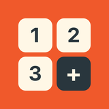
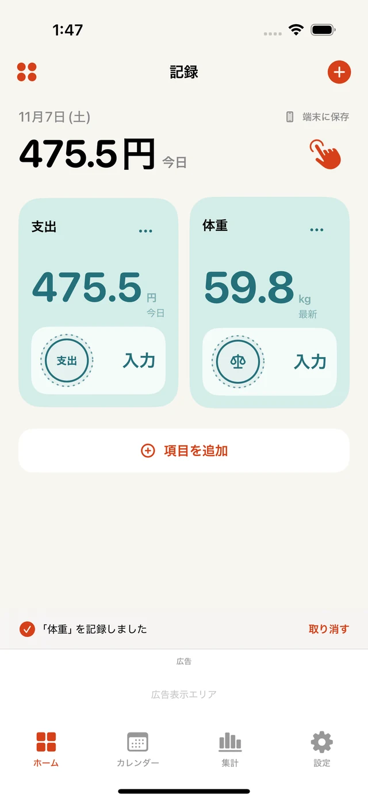
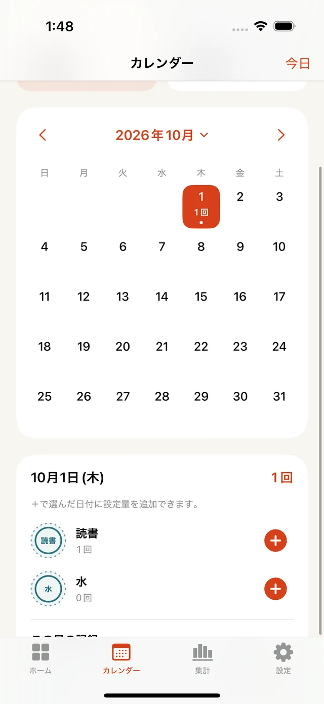
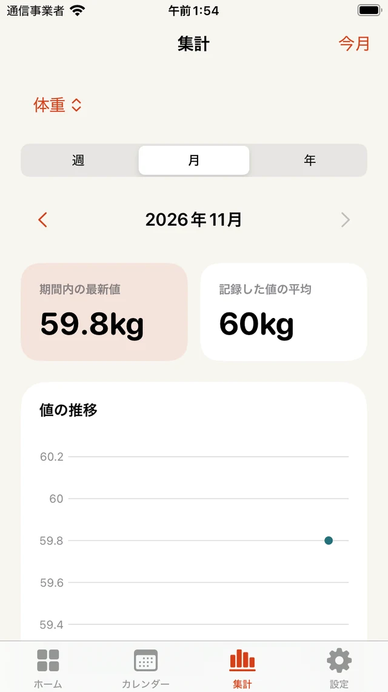

自分の単位で記録
15分、0.5km、1杯。名前・単位・スタンプ・色を選んで、続けたいことを登録できます。

スタンプカウンター勉強15分、散歩0.5km、コーヒー1杯。残したいことを自分の単位で記録して、カレンダーやグラフで振り返れます。

できること
15分、0.5km、1杯。名前・単位・スタンプ・色を選んで、続けたいことを登録できます。
決まった量はワンタップ。量が変わるときは、数値や日付、メモを添えて記録できます。
勉強時間は足し上げ、体重のような測定値は最新値と推移を表示。記録の種類に合わせて見られます。
振り返る

日付を選んで、数値やメモを確認。記録し忘れた日にも追加できます。

合計した量や、測定値の推移を項目ごとに確認できます。
アカウント登録は不要です。体重や体温などの測定値は手入力で記録します。ホーム下部にバナー広告を表示します。